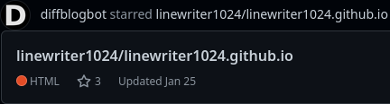
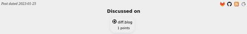

I saw yesterday that diff.blog's bot account on Github had starred the repository for this website. I clicked through to their Github page, which described diff.blog as an aggregator of developer blogs… started in 2019 to improve the visibility of self hosted blogs
.
I followed the directions in their README and signed in to diff.blog with my Github account. Once there, I added the URL of my blog to my account settings and diff.blog crawled my RSS feed. Once I saw how it was using the RSS item descriptions to generate summaries, I improved my build script to actually generate a description instead of just a list of tags. Now my blog is fully functional on diff.blog!
 diff.blog provides a Javascript plugin for blogs to display links to diff.blog, HN, and Reddit discussions about the post. I stuck this into my blog post template and it's up and running without a hitch.
{kind=link}
How did they find me? diffblogbot seems to crawl Github looking for blogs like mine. Looking at a random sampling of their stars, it seems that the crawled repositories are all Github Pages sites that either mention the keyword "blog" or have an RSS feed. Mine has both; I just recently added the RSS feed.
What do I think? diff.blog doesn't seem to be super popular, but it has a broad selection of independent blogs in its database and it interacts very well with my RSS feed. It was kinda cool to have them crawl my website unprompted. It doesn't look like there will be any overhead for playing with diff.blog, unless the Javascript plugin stops working, but that's easily stripped out. Maybe, with the fall of Twitter, services like this one will become more popular? Who knows.